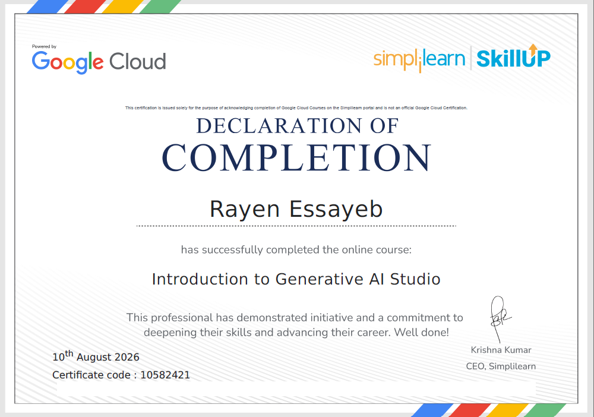
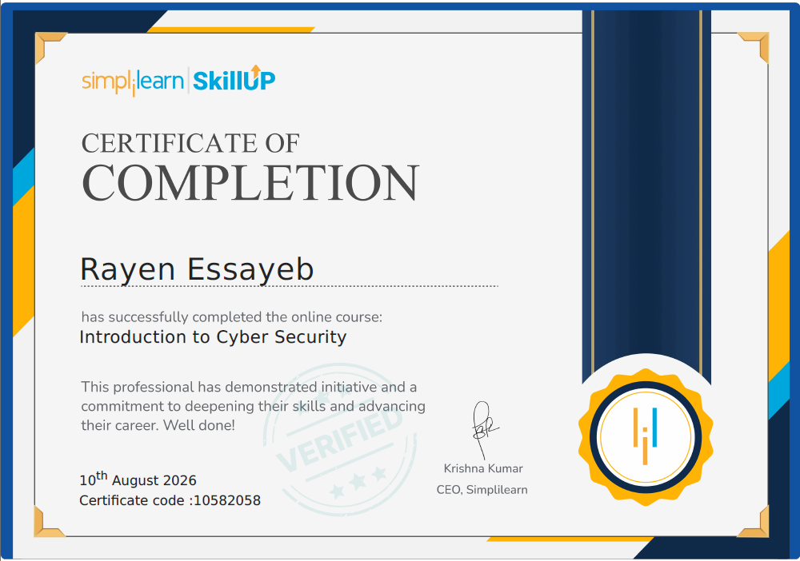
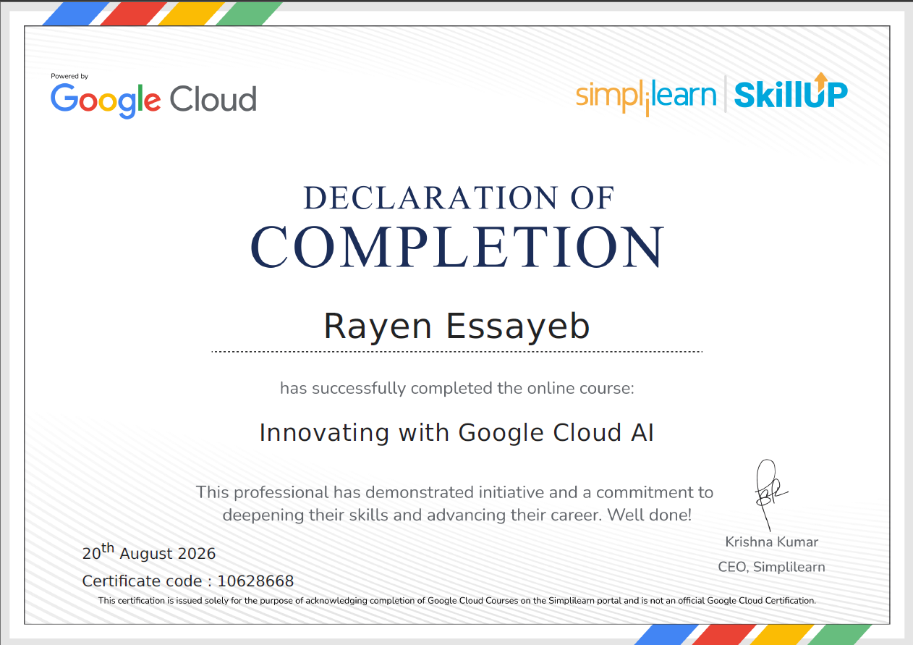

01
Frontend
Building responsive interfaces and interactive user experiences.
I'm Rayen Essayeb, a computer science student and aspiring software engineer focused on web development, thoughtful design and solving problems through code.
I’m a student at Lycée Pilote de Médenine, specializing in computer science, with a growing passion for building useful and engaging digital experiences.
From interactive websites to small practical tools, I enjoy turning ideas into projects, learning how technologies work together and improving through hands-on experimentation. I’m particularly interested in programming, web development and problem-solving.
As I prepare for my 2027 Baccalaureate, I’m also motivated to continue my higher education in computer science in France and develop the foundations for a career in software engineering.
The technologies and tools I use to learn, experiment and bring projects to life.
Building responsive interfaces and interactive user experiences.
Learning server-side logic and structured data management.
Developing programming fundamentals and problem-solving skills.
Using practical tools to write, manage and test projects.
Skills are listed without proficiency ratings; this portfolio reflects an ongoing learning journey.
A selection of practical experiments and web applications. Each project is an opportunity to learn by building.
Class of 2023
Computer Science specialization · Tunisia
Focused on strengthening my academic foundations while developing practical programming skills through personal projects.



I'm interested in learning, collaborating on meaningful projects and connecting with people in technology and education.
Send me an email ↗